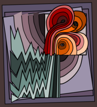

Massimiliano Gubinelli
personal web pages (work in progress!)

What is a businessman? Someone who does business? Not quite. It is
someone who sees opportunities for doing business when others might
miss them. A mathematician is someone who sees opportunities for
doing mathematics.
— Ian Stewart, “Letters to a Young Mathematician"
I have made this letter longer than usual because I lack the time to
make it shorter.
— Blaise Pascal
Le mot “random” vient d'un terme de vènerie français : randon désigne la course erratique du cerf qui zigzague en essayant d'échapper aux chiens. Le mot a aussi donné « randonnée » en français.
google scholar (url) arXiv (url) orcid (url)
Publications ⋅ Slides ⋅ Events
The list of all the articles in this website & a template for its pages.